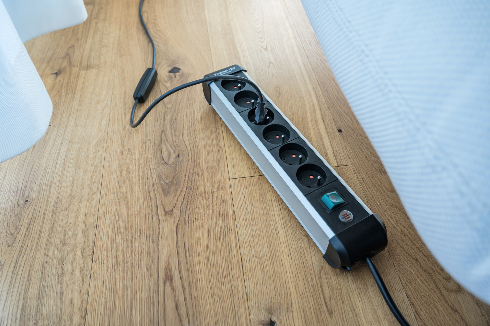

Dag 5: vrijdag
leerzaam
Dit was de laatste dag van mijn observatiestage bij de gemeente Zoersel. Ik moest om half negen beginnen en hebben we eerst gekeken hoe de back-up servers werkten en uitleg gekregen over hoe deze werden gemaakt. Voor de back-ups wordt het programma Veeam gebruikt. Hierna hebben we uitleg gekregen over het intranet, dat de gemeente Zoersel gebruikt voor hun communicatie. Na deze uitleg begon onze middagpauze. Na de middagpauze hebben we nog wat uitleg gekregen over wifi 2.4 GHz en 5 GHz. Daarna kregen we de taak om wat stekkerdozen te labelen. Toen we hiermee klaar waren, zat onze laatste dag van mijn observatiestage bij de gemeente Zoersel erop.
